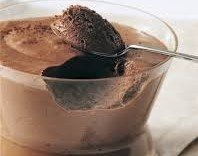

Mousse au chocolat
Ingrédients
6×
- 200 g de chocolat
- 6 oeufs
- 1 c. à s. de sucre

Préparation
Étape 1
Fondre 200 g de chocolat.
Étape 2
Séparer les blancs des jaunes de 6 oeufs. Mélanger les jaunes au chocolat avec 1 c. à s. de sucre.
Étape 3
Monter les blancs en neige ferme. Mélanger 1/3 des blancs au chocolat, puis incorporer délicatement le reste.
Étape 4
Laisser reposer plusieurs heures au frais.
Résumé
200 g de chocolat
Fondre
6 oeufs
1 c. à s. de sucre
Séparer les blancs des jaunes
Monter les blancs en neige Mélanger incorporer
Laisser reposer